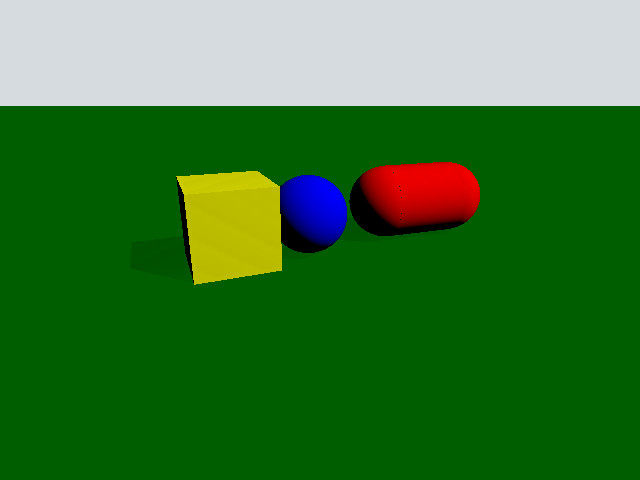

Qt Quick 3D Physics - Simple Example
Demonstrates setting up a simple physics scene.

This example gives an introductory overview of the basic Quick 3D Physics features by going through the code of a simple example. Note that this introduction assumes a familiarity with the Qt Quick 3D module.
Setup
The whole example is contained and set up in the main.qml file. Let's first look at the object that creates the physical world. This node is called PhysicsWorld:
PhysicsWorld { scene: viewport.scene }
We set the scene property to the scene of our View3D. The scene property defines where the simulation will look for physics nodes to simulate. Any physics nodes placed outside of the scene node will not be part of the simulation.
Scene
Let's have a look at the scene.
View3D { id: viewport anchors.fill: parent environment: SceneEnvironment { clearColor: "#d6dbdf" backgroundMode: SceneEnvironment.Color } PerspectiveCamera { position: Qt.vector3d(-200, 100, 500) eulerRotation: Qt.vector3d(-20, -20, 0) clipFar: 5000 clipNear: 1 } DirectionalLight { eulerRotation.x: -45 eulerRotation.y: 45 castsShadow: true brightness: 1 shadowFactor: 100 } StaticRigidBody { position: Qt.vector3d(0, -100, 0) eulerRotation: Qt.vector3d(-90, 0, 0) collisionShapes: PlaneShape {} Model { source: "#Rectangle" scale: Qt.vector3d(10, 10, 1) materials: DefaultMaterial { diffuseColor: "green" } castsShadows: false receivesShadows: true } } DynamicRigidBody { position: Qt.vector3d(-100, 100, 0) collisionShapes: BoxShape { id: boxShape } Model { source: "#Cube" materials: PrincipledMaterial { baseColor: "yellow" } } } DynamicRigidBody { position: Qt.vector3d(0, 100, 0) collisionShapes: SphereShape { id: sphereShape } Model { source: "#Sphere" materials: PrincipledMaterial { baseColor: "blue" } } } DynamicRigidBody { position: Qt.vector3d(75, 200, 0) collisionShapes: CapsuleShape { id: capsuleShape } Model { geometry: CapsuleGeometry {} materials: PrincipledMaterial { baseColor: "red" } } } }
Our scene is just a View3D since we want to draw our physical objects. It contains a PerspectiveCamera and a DirectionalLight for rendering, but more importantly it contains a StaticRigidBody and three DynamicRigidBody nodes. In physics, a rigid body is a non-deformable, solid body with uniform density. We have two types of rigid bodies available; StaticRigidBody and DynamicRigidBody. A StaticRigidBody is a QML node which contains a static (immovable) rigid body. It is technically possible to move the body but it will incur a performance penalty. A DynamicRigidBody on the other hand is used for objects that can move. A DynamicRigidBody has a isKinematic property, when it is set to true the rigid body will not be influenced by external forces and can be controlled from scripts and animations. For instance a football would not be kinematic but an elevator or a moving platform typically would. This also means that if you update the position property of the football it would not move to that position whereas the elevator would.
To be able to interact with other physical objects the collisionShapes property needs to be set. The collisionShapes property is a list that can contain one or more shapes and will act as one rigid unit combined. You can position and rotate these shapes in relation to each other. Note that plane, triangle mesh and heightmap shapes only work with dynamic bodies if the body is kinematic.
Shapes
Our scene contains four physical objects (plane, box, ball, capsule). We will go through them one at a time.
Plane
StaticRigidBody { position: Qt.vector3d(0, -100, 0) eulerRotation: Qt.vector3d(-90, 0, 0) collisionShapes: PlaneShape {} Model { source: "#Rectangle" scale: Qt.vector3d(10, 10, 1) materials: DefaultMaterial { diffuseColor: "green" } castsShadows: false receivesShadows: true } }
We create a plane by making a StaticRigidBody node. In this node we set the collisionShapes property to contain a PlaneShape. Planes divide space into "above" and "below" them. Everything "below" the plane will collide with it and be pushed above it. The Plane lies on the YZ plane with "above" pointing towards positive X. We put a Model inside our StaticRigidBody node to render the plane. This is a common pattern which makes sure that the model also moves and rotates in the same way when the physical object interacts in the scene. Since we want the plane to lie on the XY plane we rotate it using the eulerRotation property. We rotate the model in a similar way.
Box
DynamicRigidBody { position: Qt.vector3d(-100, 100, 0) collisionShapes: BoxShape { id: boxShape } Model { source: "#Cube" materials: PrincipledMaterial { baseColor: "yellow" } } }
We create a sphere by making a DynamicRigidBody node and a single BoxShape in collisionShapes. Since this is a dynamic node the box will interact with the scene by colliding and moving like a free object. Since the cube model is a hundred times bigger than a unit cube we need to scale it accordingly. Since this is a dynamic body and thus have a physical weight we set the density property.
Sphere
DynamicRigidBody { position: Qt.vector3d(0, 100, 0) collisionShapes: SphereShape { id: sphereShape } Model { source: "#Sphere" materials: PrincipledMaterial { baseColor: "blue" } } }
We create a sphere by making a DynamicRigidBody node and a single SphereShape in collisionShapes.
Capsule
DynamicRigidBody { position: Qt.vector3d(75, 200, 0) collisionShapes: CapsuleShape { id: capsuleShape } Model { geometry: CapsuleGeometry {} materials: PrincipledMaterial { baseColor: "red" } } }
We create a capsule by making a DynamicRigidBody node and a single CapsuleShape in collisionShapes. We build a capsule model by using the built-in CapsuleGeometry provided by Qt Quick 3D Physics.
Files: